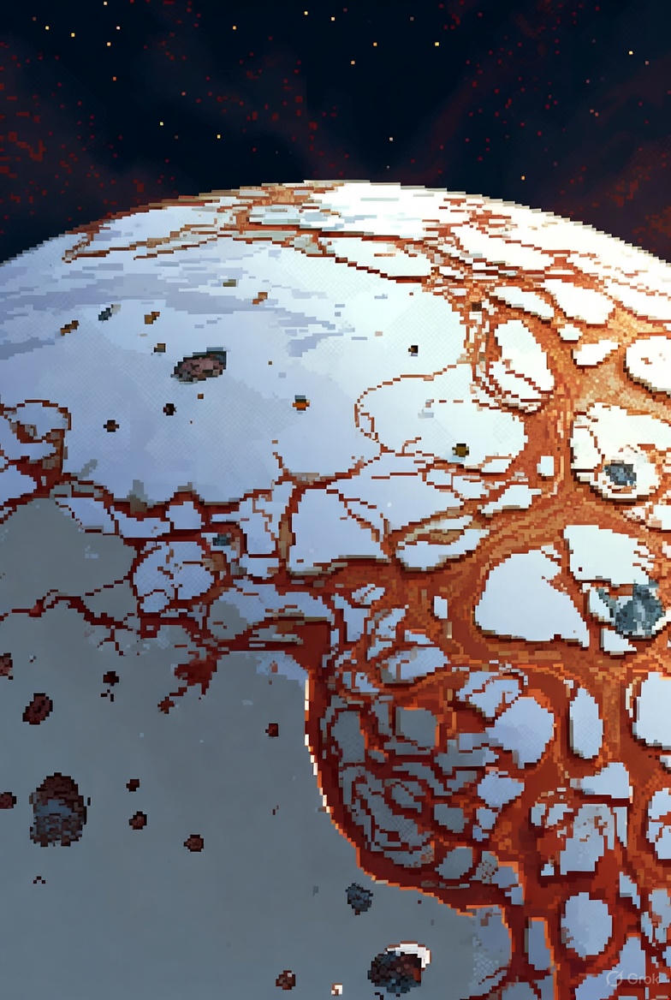
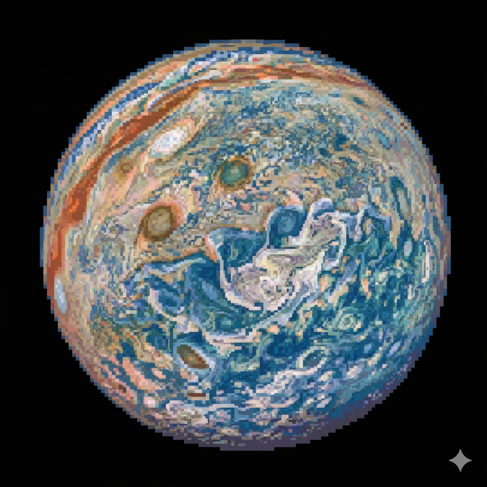
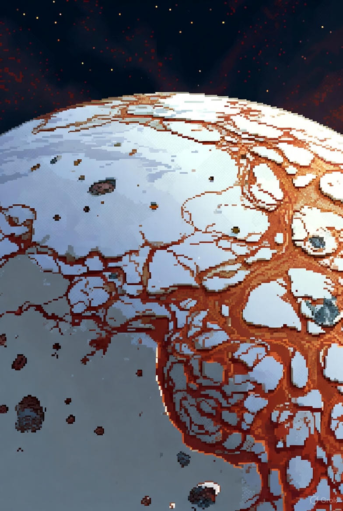
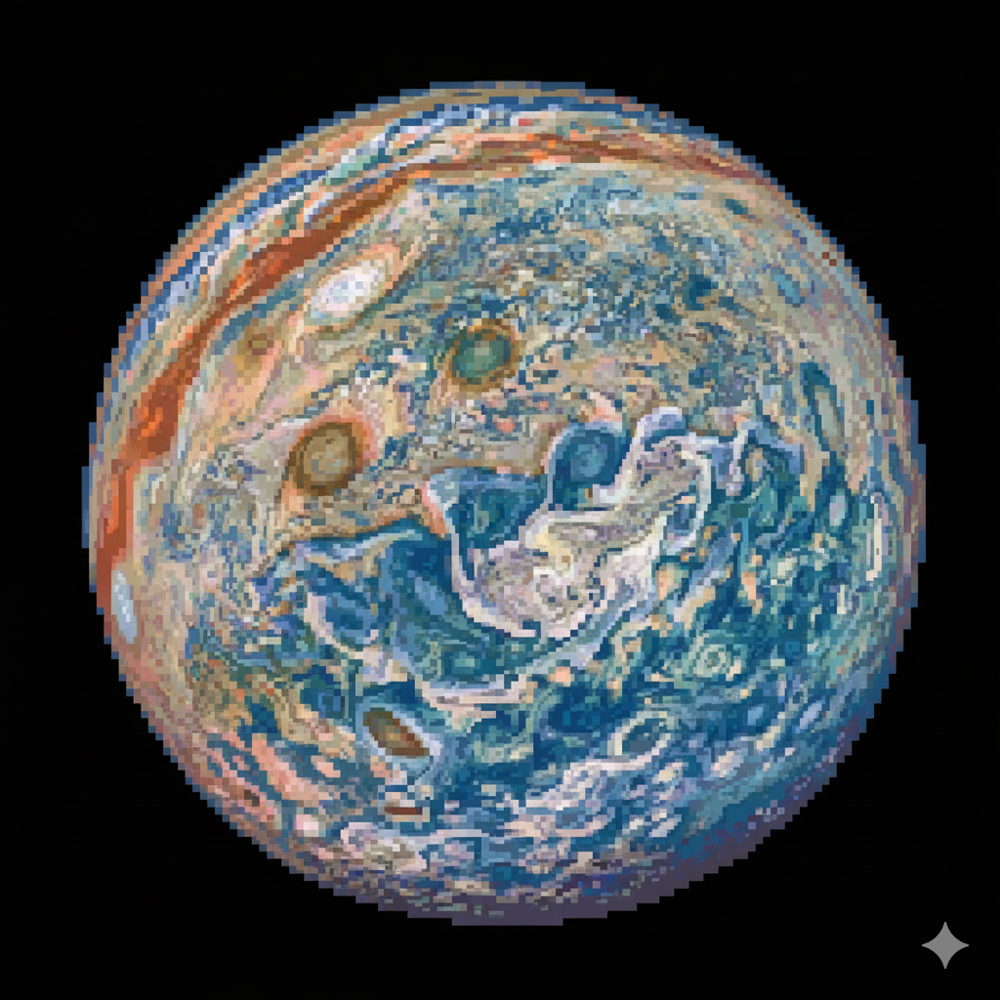
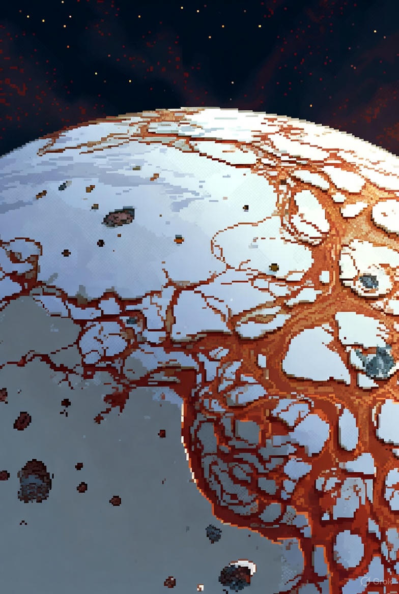
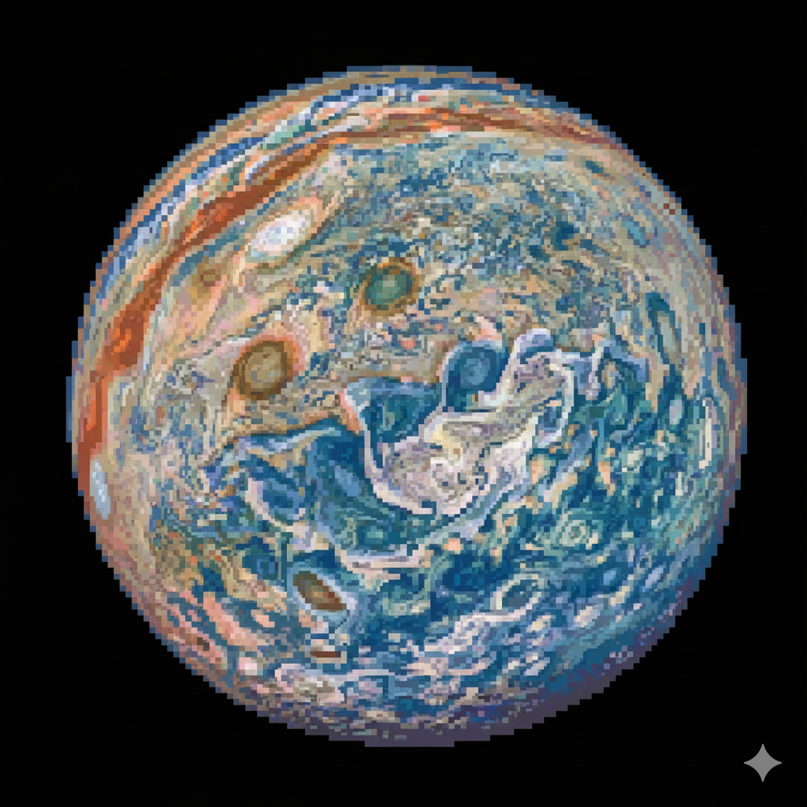

Type: Gas giant
Diameter: ~139,820 km
Mass: ~318× Earth’s mass
Moons: 95+
Length of day: ≈ 9.9 hours
Length of year: ≈ 11.9 Earth years
Distance from Sun: ~778 million km
Average temperature: −108°C
Composition: Hydrogen & Helium
Jupiter has thick layers of clouds made of ammonia and other compounds; the visible banded appearance comes from strong jet streams. Beneath the clouds pressures and temperatures rise, and the planet likely has a dense core surrounded by metallic hydrogen — conditions far beyond what any spacecraft can survive.
Jupiter was visited by Pioneer and Voyager probes, and later by Galileo which studied the planet and dropped an atmospheric probe. More recently Juno arrived in 2016 to study Jupiter’s gravity field, magnetic field, and deep atmosphere for extended orbits.
NASA and partners plan missions to the Jovian system focused on its moons (especially Europa), while orbiters and probes continue remote studies of Jupiter itself. These efforts aim to understand Jupiter’s interior and role in Solar System formation.

